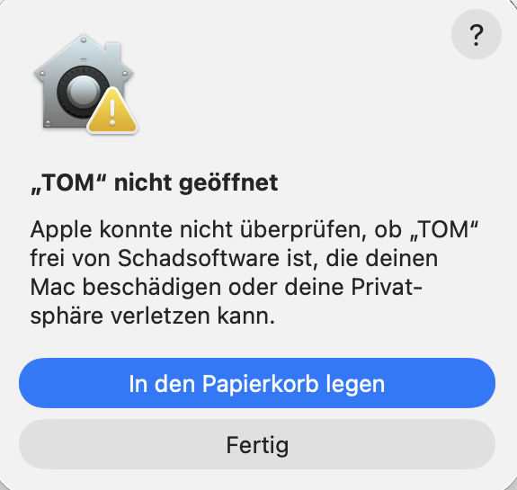
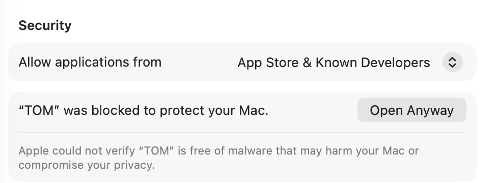
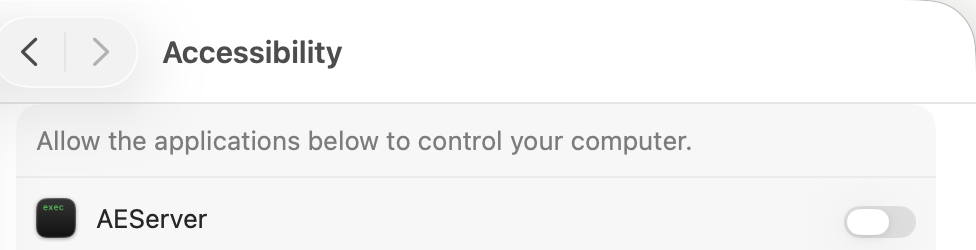
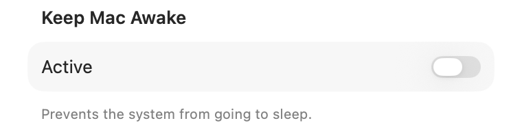
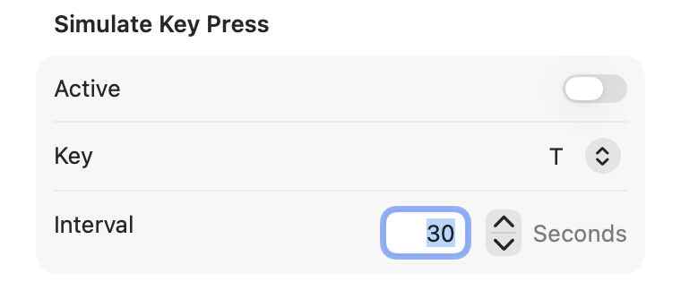
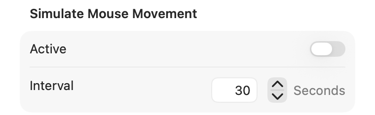
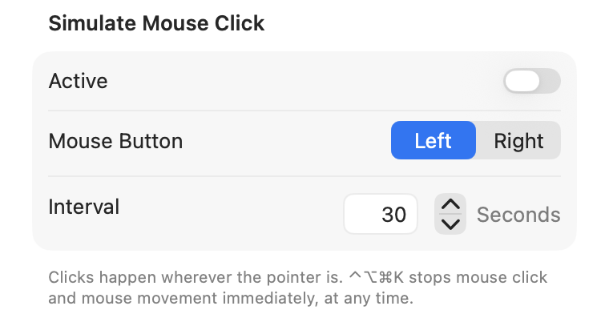
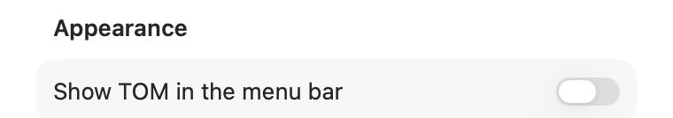
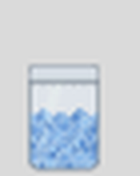

TOM is a small, free, open-source menu bar and window app for macOS with four independent functions. This manual covers the parts that are not obvious from the app itself: installing an app that is not notarized by Apple, and granting the permission the simulation features need. The app's own window explains everything else as you go.
Download the latest release, unzip it, and move TOM.app to your Applications folder.
TOM is signed locally but not notarized by Apple (notarization requires a paid developer account). The first time you open it, macOS blocks it and shows a warning like this one:

Click Done — do not move it to the Trash. Then open System Settings → Privacy & Security and scroll down to the Security section. You'll find a message about TOM there, with an Open Anyway button next to it:

Click Open Anyway, confirm with your password or Touch ID, and TOM starts. You only need to do this once per downloaded copy of the app.
Keeping the Mac awake needs no special permission. The other three functions — simulating a key press, mouse movement, or a mouse click — do, because they send input events at the system level. TOM asks for this the first time you switch one of them on, and links directly to the right place:

Find TOM in the list and turn its switch on.
Good to know: TOM is signed locally, not with a stable developer certificate. That means the permission can reset itself when you install a new version — if a simulation feature suddenly refuses to start after an update, open Accessibility settings, toggle TOM's switch off and back on, and try again.

One switch. While on, the display and the system won't go to sleep due to inactivity — independent of your Energy Saver settings. No permission required.

Sends a real key press at the interval you set (1–600 seconds). The key list follows your keyboard layout, so the letters shown match what's printed on your keys. After switching on, TOM waits 5 seconds before the first press so you can bring the target window to the front.

Nudges the pointer one pixel and immediately back, at the interval you set. No click, no visible movement — just enough for the system to register activity.

Clicks the left or right mouse button wherever the pointer currently is, at an interval down to 0.1 seconds. Also starts with a 5-second countdown, and switches itself off automatically after 8 hours.
Emergency stop: ⌃⌥⌘K — stops mouse click and mouse movement immediately, from any app, at any time. It's shown in TOM's window whenever one of the two is running.

TOM always has a Dock icon. The menu bar icon is optional and off by default — switch it on for one-click access to the same window from wherever you are:

Quit TOM, then move TOM.app from your Applications folder to the Trash. To also remove its saved settings, run this in Terminal:
defaults delete com.neonrost.TOM